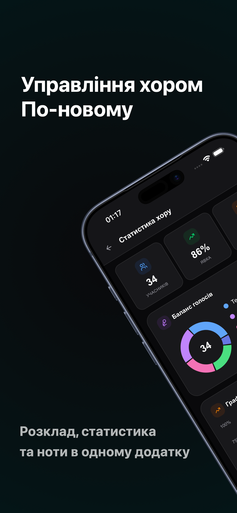
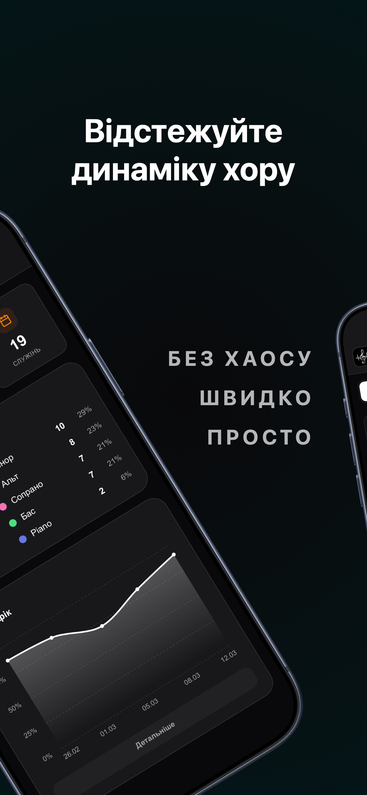
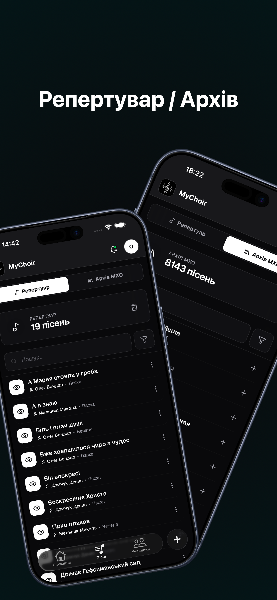
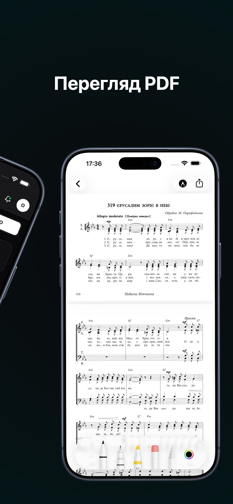
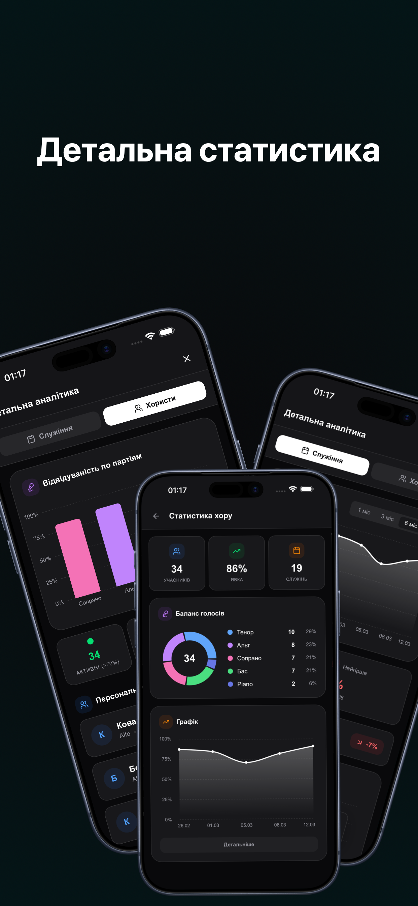

Відмічайте присутність в один дотик. Регент миттєво бачить баланс партій (S, A, T, B) до початку репетиції, розуміючи реальний склад хору.
Глобальний архів з тисячами нот та власна хмарна бібліотека вашого хору. Шукайте миттєво. Репетируйте де завгодно.
Ноти завантажуються в кеш та доступні без мережі.
Миттєвий пошук завдяки локальній оптимізації.


Відкривайте партитури за лічені секунди у вбудованому PDF-рідері. Читайте з комфортом або генеруйте готову програму для зручного друку.
Слідкуйте за активністю хору. Глибока статистика відвідуваності дозволяє регенту оптимізувати планування, заохочувати учасників і створювати ще гучніше звучання.

Завантажуйте MyChoir вже сьогодні та зробіть репетиції вашого хору ідеальними.